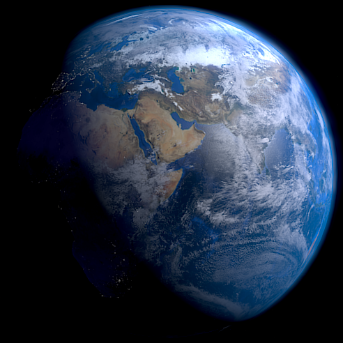

- Distance: The sheer distance between Earth and other stars makes tracing life difficult, as well as avoiding false positives.
- Origins: The process of abiogenesis (See panel 4) is still largely unknown, causing uncertainty in conditions for life to exist.
- Ethics: Discovering extraterrestrial life would change our perspectives of life in its entirety. Strict protocols would need to be introduced.
- Sample Size: Currently, only one example of planetary life (Earth's) exists, so it is difficult to gauge the potential of life elsewhere.
- Funding: Astrobiology is more of a niche field, involving the work of several disciplines. It is difficult to secure funding/grants for research.
- Communication: The highly abstract nature of Astrobiology and the depiction of aliens
throughout culture can easily lead to misunderstandings, and sensationalism within the media. This can damage the
legitimacy and reputation of the field entirely.
(See "Biases" tab)
Astrobiology's origins can be traced back to the suspicions of ancient philosophers who pondered the existence of life beyond Earth. With the adoption of Copernicus's heliocentric model in the 1600s, the universe expanded in scope, suggesting other worlds might harbor life. In the 1970s, the discovery of the Wow! signal, a radio signal from deep space, renewed interest in extraterrestrial life. The foundation groundwork for modern astrobiology also grew through advancements like the invention of the microscope, deepening the understanding of microbial life, and the development of space technologies. (See Timeline) Today, NASA’s astrobiology program leads the research effort, focusing on Mars, exoplanets, and biosignatures.
The rise of astrobiology also poses its challenges: one of the leading ones being effectively communicating astrobiology to the media and the public. Misunderstandings, news headlines and pop culture can also mislead, affecting the credibility of the field. This struggle to maintain a balanced portrayal is crucial, as it impacts public perception and the ability to secure funding for critical research. Efforts within the domain of professionals are also prone to subtle biases, such as human-centrism, which may hinder our search range for extraterrestrial life (See Biases).
This module contains some key vocabulary used in Astrobiology.
Panel 1
This is Panel 1 with sample text.
Panel 2
This is Panel 2 with sample text.
Panel 3
This is Panel 3 with sample text.
Panel 4
This is Panel 4 with sample text.
Panel 5
This is Panel 5 with sample text.
Panel 6
This is Panel 6 with sample text.
Panel 7
This is Panel 7 with sample text.
Panel 8
This is Panel 8 with sample text.